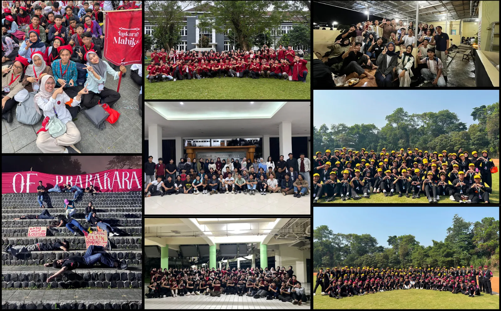

Harapan saya selama kuliah sebagai mahasiswa Kecerdasan Buatan adalah bisa mendapatkan ilmu, wawasan dan pengalaman yang bermanfaat. Saya juga berharap bisa memanfaatkan apa yang didapatkan sejauh ini dan yang akan didapatkan nanti bisa membantu saya berkembang menjadi lebih baik dari sebelumnya dan bahkan berguna bagi orang lain.